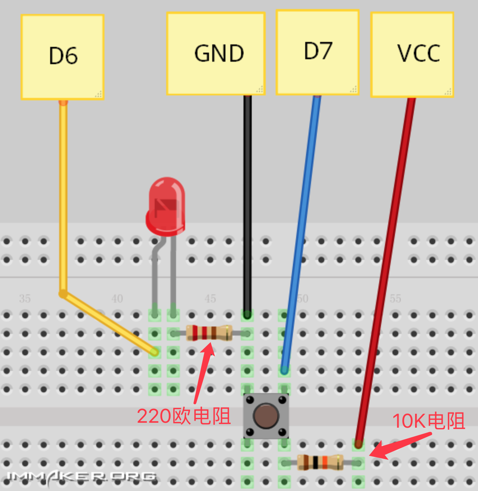

Arduino digitalWrite、digitalRead 组合之按钮点击亮灯~
代码
void setup() {
// put your setup code here, to run once:
pinMode(6, OUTPUT);
pinMode(7, INPUT);
}
void loop() {
// put your main code here, to run repeatedly:
if(digitalRead(7) == LOW) {
digitalWrite(6, HIGH);
} else {
digitalWrite(6,LOW);
}
}
接线

这里还要说下按键4个引脚是怎么分的，按图放置，同颜色箭头所指的两个引脚相通
当按下按键，蓝色箭头所指的引脚和红色箭头所指的引脚相通。
效果：
按住按钮时，LED灯亮起，松开手，LED灯随即熄灭。